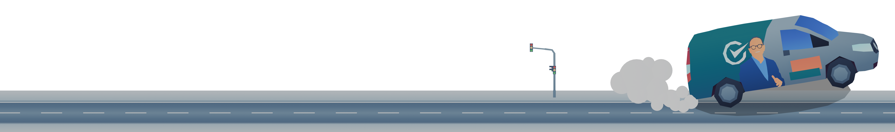
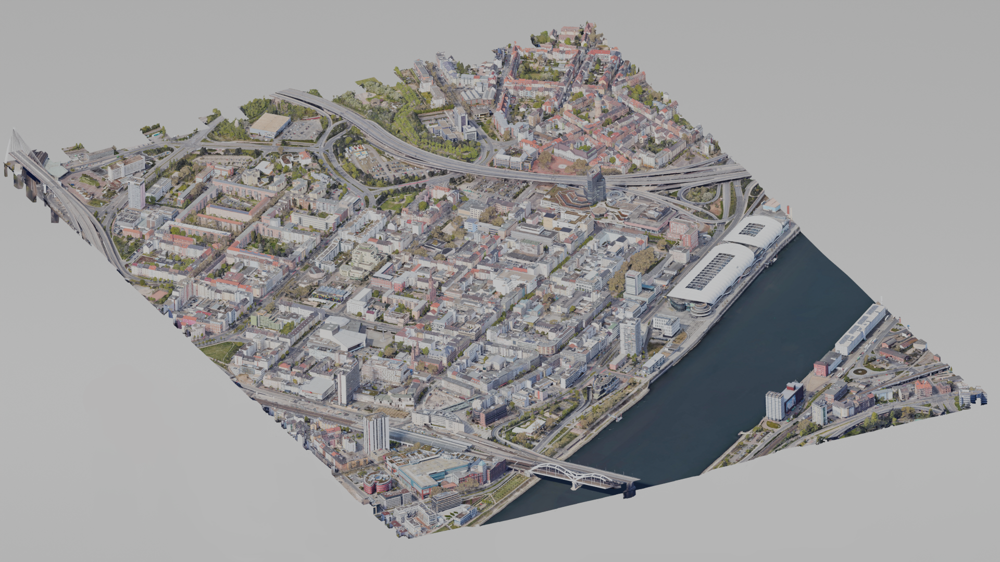
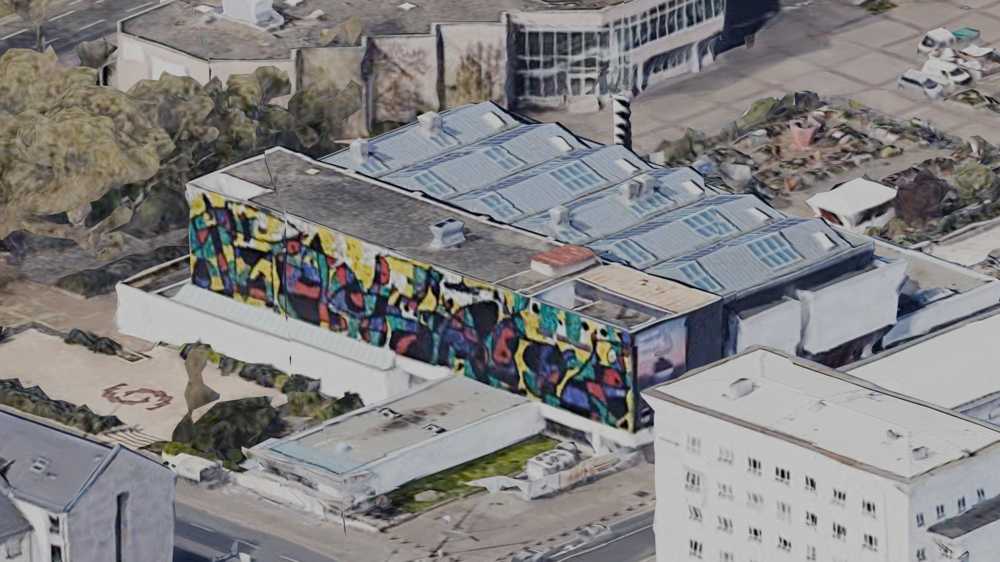
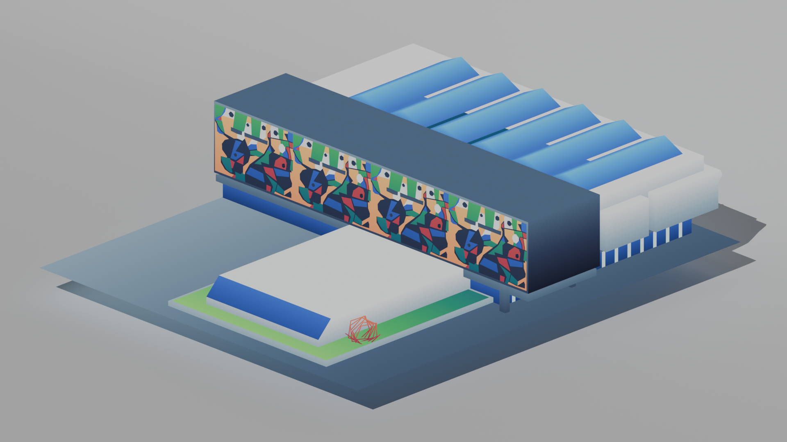

Spice Race

For this project I was approached by a local politician to create a campaign game for the city Ludwigshafen in about 3-4 weeks. He wanted something, that would garner interest and at the same time be heavily connected to the city. That led to two key constraints:
- The city lacked iconic exports/products to feature
- The client initially wanted a mobile app - a format I argued would limit reach.
My solution:
- Landmark-Based Design: Used Google Maps’ 3D scans as templates to recreate Ludwigshafen’s architecture in Blender, converting landmarks like the Wilhelm-Hack-Museum into low-poly models with cohesive art direction.
- Browser-First Approach: Developed in WebGL (Unity) to eliminate download barriers, with responsive scaling for mobile/desktop and adaptive controls (touch steering vs. keyboard).
- Campaign Integration:Designed gameplay around collecting "spice mixes"—the politician’s real-world promotional gift—while drifting through a condensed version of the city.

I had several highlights while working on this project and a lot of things I learned. In previous projects optimization was always relevant, but not this crucial. I had to reduce polycount, reduce drawcalls with limited materials and textures and tried to keep the game as small as possible. In the end everything was textured with one palette of 16 colour pixels. Meaning: all the textures were about 48 bytes big!
All textures in 16 pixels!
The small texture size was only possible through changing the UVs of every model to a very small size and stretching them over the texture. Here is the result:

The scan from Google Maps imported into Blender. It's called the Wilhelm-Hack-Museum

The final version of the ingame equivalent
At the end I shipped the final version here
What I learned:
- Check all receiving devices: I tested only on PC for too long. Getting the grasp of the game feel on Mobile would have been useful for game design decisions.
- WebGL Limitations: Discovered mobile browsers throttle performance after 30s—worked around it by simplifying shaders when the game was being played on Mobile.